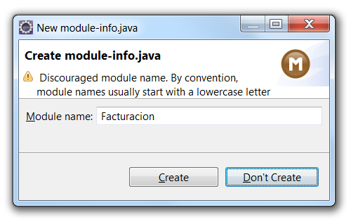

Desde v6.4 OpenXava incluye OpenXava Studio, por lo que no necesitas un
IDE adicional para trabajar con OpenXava. OpenXava Studio está basado en
OpenXava pero es más ligero y bonito. Además, puedes instalar cualquier
plugin de Eclipse que necesites en OpenXava Studio y cambiar el tema
visual, para poner un tema claro o iconos con color, por ejemplo. De todas
formas, si prefieres trabajar con tu propio Eclipse también es posible.
Además, los proyectos OpenXava son proyectos WTP, por lo que si usas
Eclipse IDE for Enterprise Java Developers, puedes añadir un servidor
Tomcat en la pestaña
Servers tab y añadirle tu aplicación
OpenXava.
Usar workspace de OpenXava
Después de iniciar tu Eclipse éste te preguntará que selecciones un
worspace, selecciona la carpeta
workspace incluida en tu
distribución de OpenXava:

Ahora teclea el nombre del
proyecto,
Facturación por ejemplo, y pulsa en el botón
Finish:

Si estás usando Java 9 o superior con una versión reciente de Eclipse, te
preguntará:

Pulsa en Don't Create.
Después de este paso ya tienes un proyecto Java vacío llamado
Facturacion: